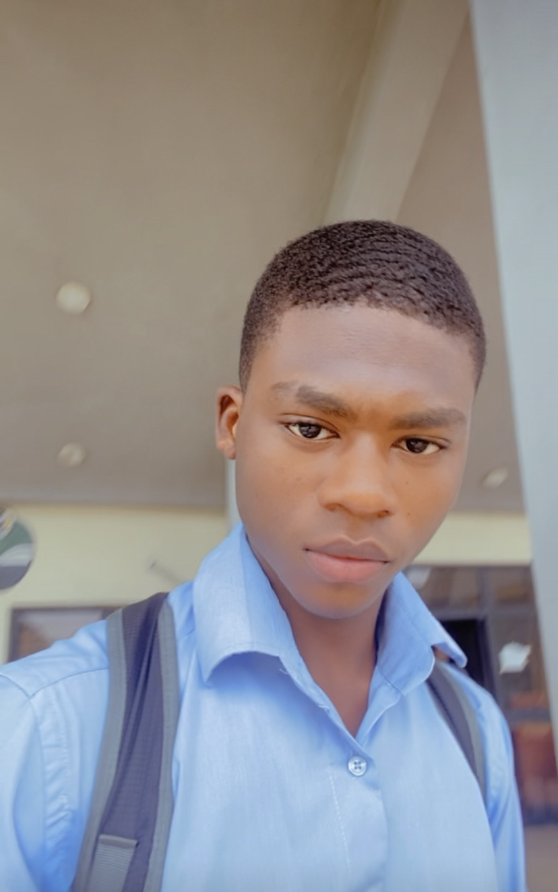
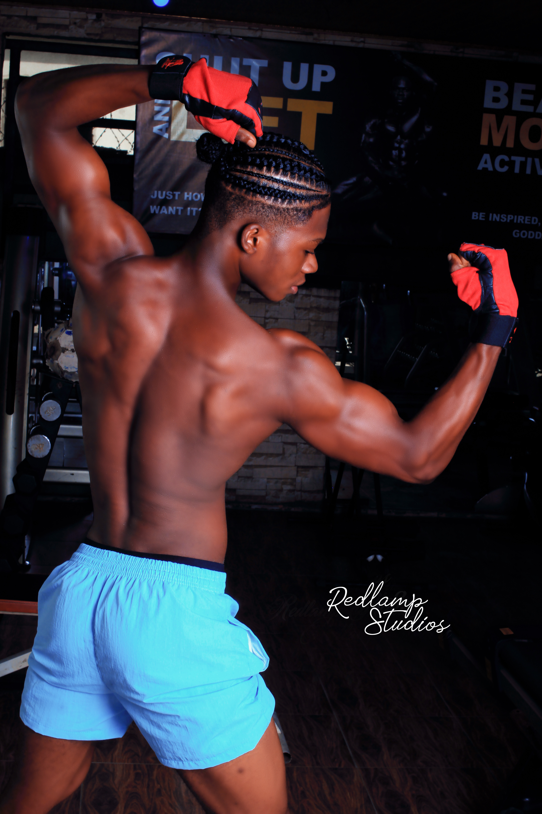

About
Clinton Joy, who goes by the nickname Cjay, was born on the 1st of June 2003, and grew up in Port-Harcourt city, Nigeria. Clinton attended Air Force Secondary School and is currently a student at the Federal University of Port-Harcourt, River state of Nigeria. Clinton has always been a sharp guy and has been known by his friends as a good leader, an investor, a book smart and someone who never snoozed on opportunities.

Clinton is book smart. He graduated as one of the best students in his secondary school, which is one of the best schools in the city. He comes from bagging a good West African examination council result, he is currently doing well in his college studies.
Clinton is currently a class representative at the university of Port-Harcourt and has proven his worth with great leadership qualities and he is currently the financial secretary for a charity organization.A HUNDRED SMILE FOUNDATION A HUNDRED SMILE Foundation has shown great financial management skills.

As a smart guy thirsty for success and not having a very good financial background, Clinton has been involved in various hustles, including gambling, investing in schemes, crypto trading, forex- trading, all of which he did when he was as young as 13 years, somewhere profitable while some not profitable.
Clinton is no longer involved in gambling and Ponzi investing and has chosen a clear path which he enjoys doing, and he is happy with it Clinton discovers the tech industry in 2020 and has chosen a clear career path. Clinton has equipped himself with the skills of a front end developer and looks forward to being an expert full stack developer. Learning never ends and, as a self-taught developer, he has a lot of personal experiences.
Did I mention Clinton is handsome and sexy 😅 ? Well he is, he started his gym journey in 2022 and has made so much progress so far, having good genetics and striving to be the best at all he does. He has made massive progress in a short period.

A tech genius, a gym rat, a philanthropist an investor this Beautiful and young man has a bright future ahead him and with great power comes great responsibilities
I believe CJAY can change the world.🤡